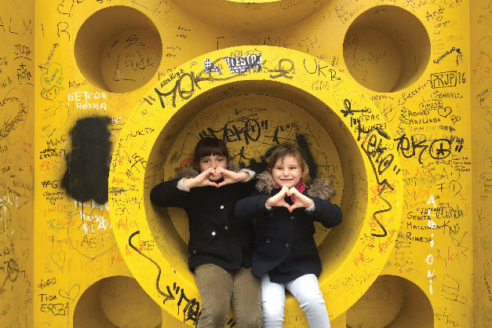

Population
Exact statistics regarding the population size of Kosovo does not currently exist. However, it is estimated to range around 1.8-2.2 million. At present, Kosovo has the youngest population in Europe with the population density being close to 200 per square kilometer which is considered one of the highest in Europe as well.
Ethnic groups
Ethnic group division in Kosovo:
88% are Albanians 6% are Serbs 3% are Bosniaks and Gorani 2% are Roma, Ashkali and Egyptians 1% are Turks
Religion
Ages ago, the Kosovar Albanian ethnics were chiefly Roman Catholic by religion. The religion changed, however, in the 14th century when the Ottoman Turks conquered Kosovo and introduced the new religion of Islam which many Albanian families found appealing and, in return, embraced in large amounts. At present, only around 3% of the Kosovar population is composed of the Roman Catholics.
The greater part of Kosovo’s population (Muslims) practice the mainstream known as Sunni Islam, however almost all of the population residing in the villages in the region has some families that are Shi’ite Muslims. There are additional various Islamic groups but are significantly smaller in size, such as the Bektashi dervish sector.
Even though the vast majority of Kosovar Muslims are not firmly religious or radical among their views, a great number of them practice the most common Islamic traditions, practices, and preventions such as the more common Islamic holidays and the ideal of not eating pork.
The greater part of the ethnic Albanian Kosovar population, including the communities consisting of the Bosniak, Gorani, Turkish, Roma, Egyptian and such, greatly support the practices and ideals of Islam. The ethnic Serb community population, however, chiefly belong to the Serb Orthodox religion. As far as the remaining Roman Catholic Albanian population, their main concentration and places of residence are in Prishtina, Klina, Peja, Gjakova, Prizren, and Vitija.
Main religions in Kosovo are:
Muslim 90 % Serbian Orthodox 7% Roman Catholic 3%